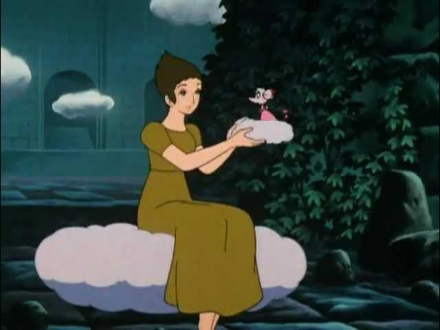
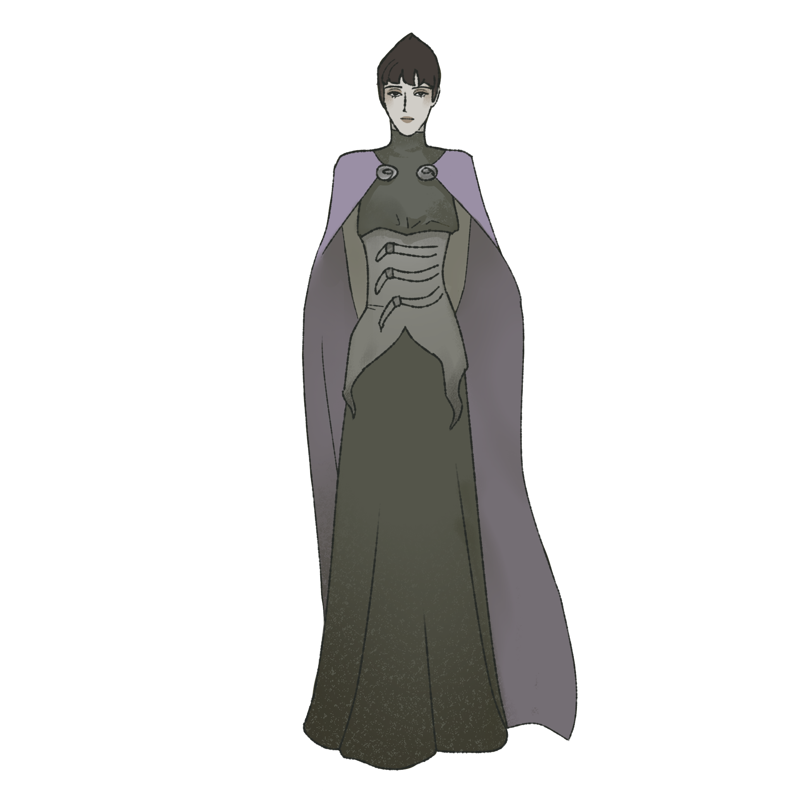

Jack and the Beanstalk
This is an ongoing personal project I am developing in my spare time. Inspired by the Japanese 1974 animation 'Jack and the Beanstalk', it explores character design and narrative dynamics through 2D and 3D pre-production assets.
I started by sketching different versions of all characters, linking their designs together. For Margaret, after finalizing her concept, I built a 3D model in Blender to use as a fast spatial reference for downstream 2D Synfig animation tests.
My idea is to rethink the classic tale through short animated visual sequences. Having re-watched this cartoon as an adult, I noticed some compelling character dynamics—such as Tulip's mother compensating for her own life by controlling her son's solitude, and Margaret's passive dreaminess acting as a quiet form of rebellion.
